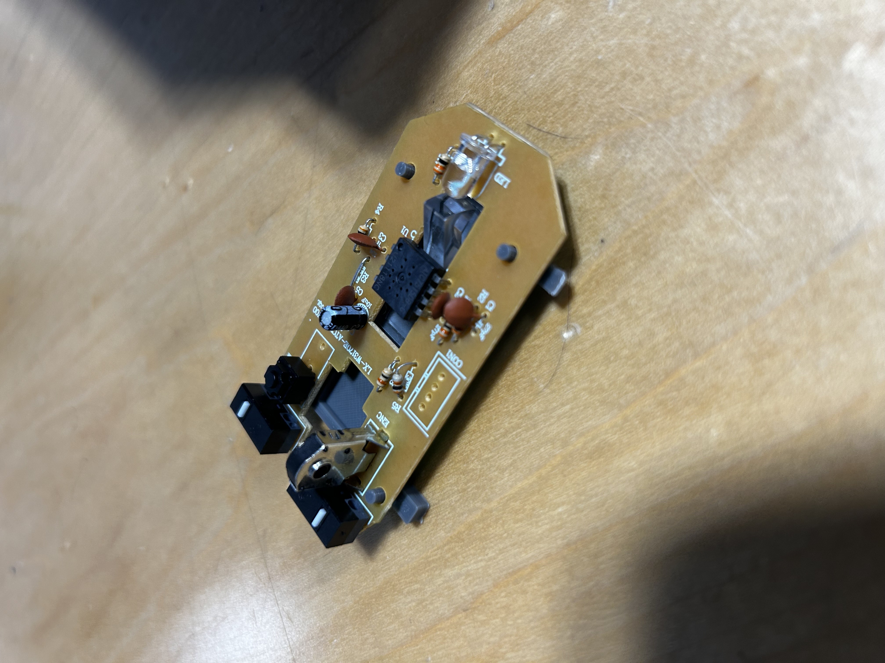

soph week 4/1 - 4/4
birthday + no school monday, so shorter week.
zerømouse updates
last week, i mentioned three problems that i had with my first print
1. the size is really short… like way shorter than i thought
2. the standoffs for the pcb aren’t aligned properly (mainly because i suck at measuring)
3. the holder for the sensor was a bit small, and there was only one layer of print for it
so i decided to address these problems and reprint.
test print two
so i fixed the size issue on my shell, and i’m liking it a lot more.
also, i finished the sensor holder, as it holds it perfectly.
however, there are still a few problems on my print, as the standoffs were still slightly missaligned and were too short
i initally didn’t think that height would be a problem, but even forcing the pcb to fix in all four standoffs, they pcb would not stay on the shell with the sensor block on the shell. to fix this, i increased the height of the standoffs from 3mm to 5.5mm and reprinted.
test print three
i decided to downscale the model as i only needed to test the standoff height with the sensor, so i minimized the model as much as possible. additionally, i decreased the distance between the top two standoffs by 0.05mm
this ended up being perfect. both the distances between the standoffs and the height of the standoffs worked amazingly with the sensor block inside the shell.
going forward, i need to work on the mouse clicks (both left and right buttons).
mouse buttons
so i created a rough model of the mouse buttons, but ended up hating it.
instead, i found a really nice model consisting of mouse buttons, so going forward, i’m gonna be recreating my shell to fit with the mouse buttons instead of creating my own mouse buttons.
left side was my original attempt at mouse buttons. right side are the mouse buttons i’ll be using moving forward from now
due to the stand on the pcb for the scroll wheel, i had to create a hole(?) thing which ended up looking really ugly. additionally, the mouse clicks i made weren’t slanted which wouldn’t be practical. while it could be adjusted, i hated my original design and was unsure how to fix it.
i’m going to try and recreate my shell on this new document, and get both the mouse buttons and shell printed together to test everything and make sure it works.